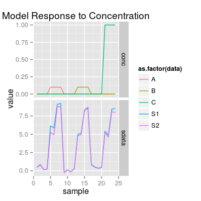
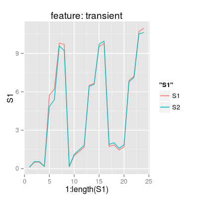
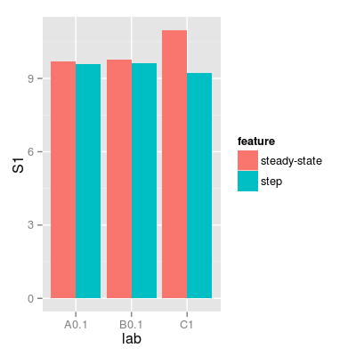

Method sdata.frame converts a concetration matrix and (optionally) a sensor data matrix into a data frame.
The input parameters are an object, e.g.
SensorArray, a concentration matrix, and
(optionally) a sensor data matrix. The output data frame
has the following columns:
S1, S2, ... |
Sensor signals. |
A, B, ... |
Gas concentrations (column names equal to gas names of the object). |
glab |
Gas labels, e.g. A
or Air. |
lab |
Gas+Concetratoin
labels, e.g. A 0.01. |
set.seed(1) ### 1) a concentration matrix of three gases (tunit 4) sa <- SensorArray(tunit = 4) set <- c("A 0.1", "B 0.1", "C 1") sc <- Scenario(set, tunit = 4) conc <- getConc(sc) head(conc)A B C 1 0.0 0 0 2 0.0 0 0 3 0.0 0 0 4 0.0 0 0 5 0.1 0 0 6 0.1 0 0sdata <- predict(sa, conc) p1 <- plotSignal(sa, conc = conc, sdata = sdata) p1
# get a data.frame of features df.transient <- sdata.frame(sa, conc = conc, sdata = sdata, feature = "transient") df.ss <- sdata.frame(sa, conc = conc, sdata = sdata, feature = "steady-state") df.step <- sdata.frame(sa, conc = conc, sdata = sdata, feature = "step") # plot p2 <- ggplot(df.transient, aes(x = 1:length(S1))) + geom_line(aes(y = S1, color = "S1")) + geom_line(aes(y = S2, color = "S2")) + labs(title = "feature: transient") p2
df <- rbind(data.frame(df.ss, feature = "steady-state"), data.frame(df.step, feature = "step")) p3 <- ggplot(df, aes(lab, S1, fill = feature)) + geom_bar(stat = "identity", position = "dodge") p3